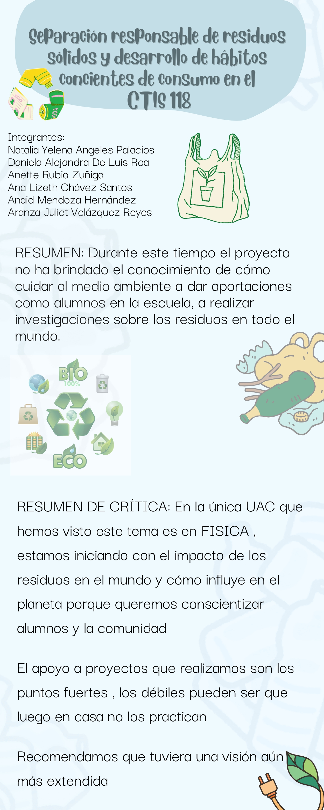
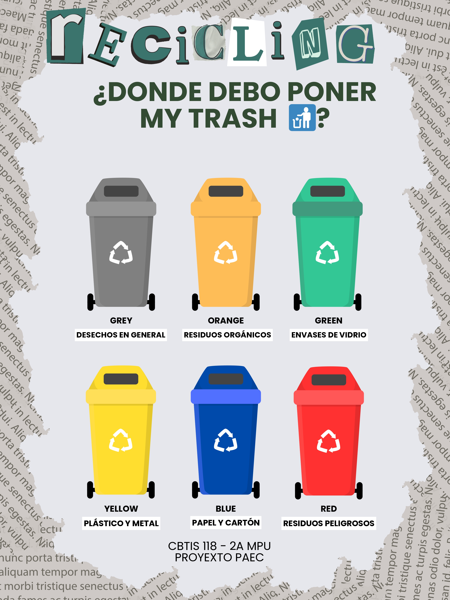

Aplicamos conceptos matemáticos para calcular el impacto ambiental y desarrollar soluciones eficientes para el reciclaje.
Desarrollamos habilidades de comunicación efectiva para promover mensajes de sostenibilidad y reciclaje.

Estudiamos los principios físicos involucrados en los procesos de reciclaje y transformación de materiales.
Aprendemos vocabulario y conceptos relacionados con el medio ambiente y la sostenibilidad en inglés.

Analizamos el impacto social de las prácticas de reciclaje y cómo pueden transformar comunidades.